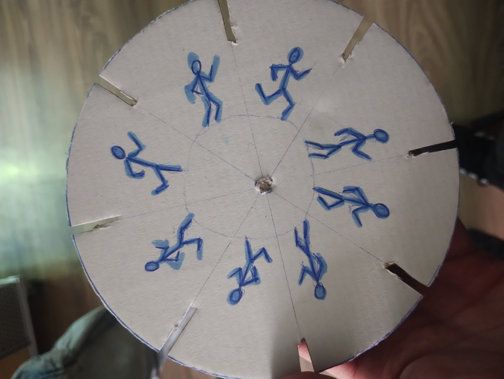

Операторското майсторство е жизненоважната връзка между идеята на режисьора и това, което зрителят вижда на екрана. Работата на оператора не се ограничава само до техническото управление на камерата – тя е дълбоко творчески процес, при който всеки кадър се превръща в платно.
Като ученик от 11 клас изследвам как различните видове обективи, движението на камерата (панорами, колички, ръчни кадри) и разположението на светлината променят психологическото въздействие на една сцена. Чрез операторството се стремя да предам атмосфера, да засиля емоцията на актьорите и да създам естетически издържана визия, която допълва и обогатява филмовия разказ.

При завъртане около центъра си, фенакистископа създава анимация.
В това видео се показва как се движи камерата (за да води окото на зрителя) и какво ни казват символите (за да внушат емоция без думи).
Визуално разказва история с филмови планове